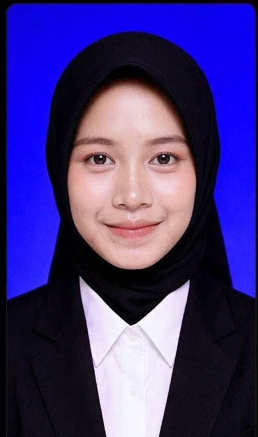

Mahasiswa Semester 3
Politeknik Manahijul Huda
| Nama | : Nayla Zeviska Anggiani |
| NIM | : 2501010 |
| Tempat, Tanggal Lahir | : Tasikmalaya,03 November 2006 |
| Alamat | : Kap.Tagog Des.Buniasih Kec.Kadipaten Kab.Tasikmalaya Provinsi.Jawa barat |
| No. HP | : 085869077067 |
| : @naylazeviska0gmail.com |
Saya merupakan mahasiswi semester 3 Politeknik Manahijul Huda. Saya memiliki ketertarikan pada bidang teknologi informasi, komputer, dan pengembangan website. Saya senang mempelajari hal-hal baru dan berusaha meningkatkan kemampuan dalam bidang teknologi.
Belajar teknologi, membuat website, mendengarkan musik, dan mempelajari hal-hal baru.
Email: @naylazeviska0gmail
No. HP: 085869077067